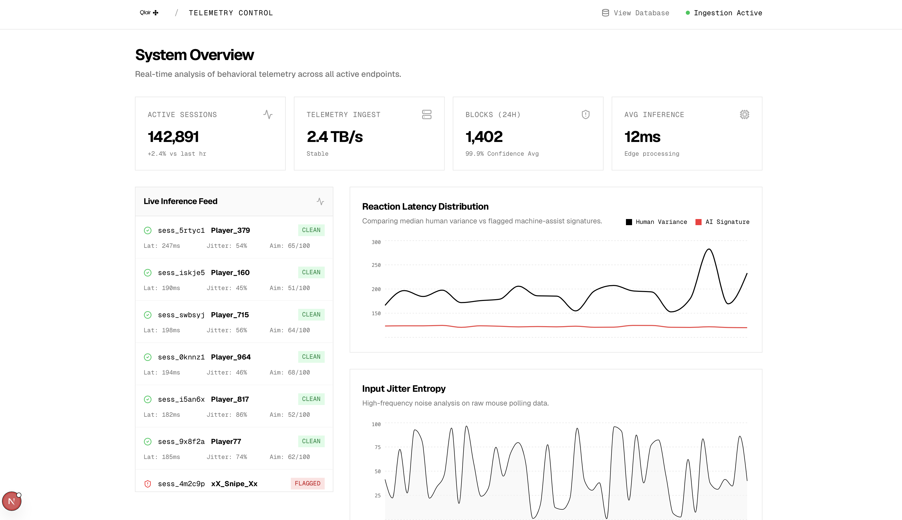
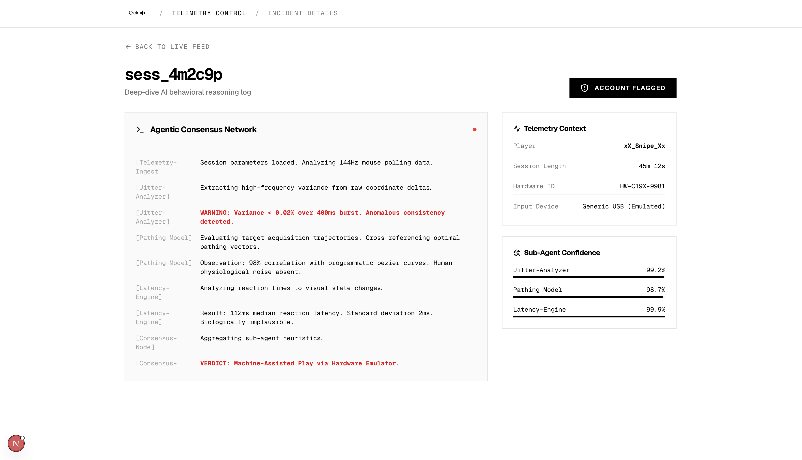

Run server-side
Qlair runs server-side, analyzing match data and player behavior without requiring players to download anything locally.
AI anti-cheat framework
Machine learning models trained on human behavior, known cheats, telemetry, and hardware signatures identify artificial play and cheating within seconds.
Problem
AI is changing how cheating in games works. Cheat software can run externally, use models to aim, react, or generate new exploits, and hide inside the noise of normal play.
The cost is direct: studios lose revenue, competitive integrity, and players. Cheaters chase away players; without players there is no industry.
Solution
Qlair is an AI native anti cheat framework, continuously comparing player actions against trained models and fresh telemetry. It flags unnatural assistance before it becomes a community problem.
Interface


How it works
Qlair runs server-side, analyzing match data and player behavior without requiring players to download anything locally.
It views and compares player actions against training data, telemetry, and known cheat signatures.
Computer-assisted or unnatural behavior is matched against a growing dataset of patterns.
Restrict or ban confirmed cheaters in minutes instead of hours, protecting legitimate players.
For game studios